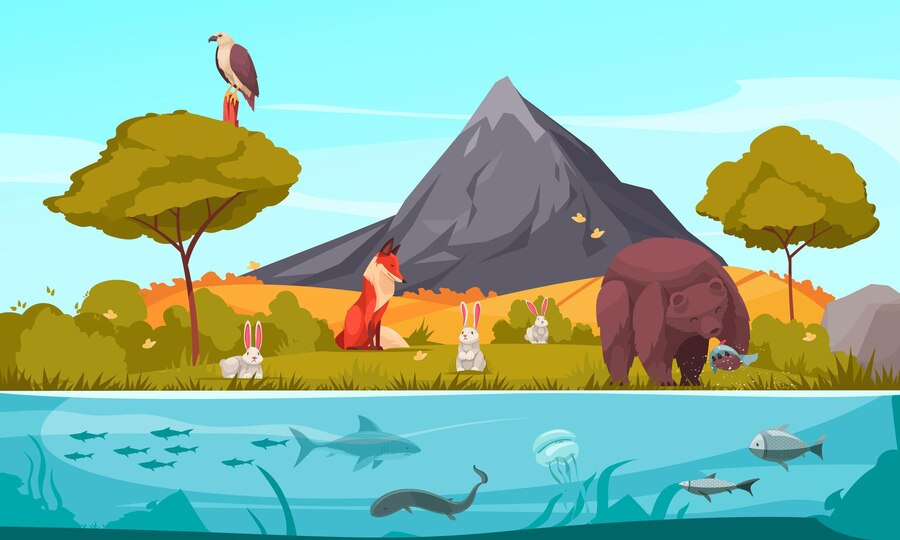
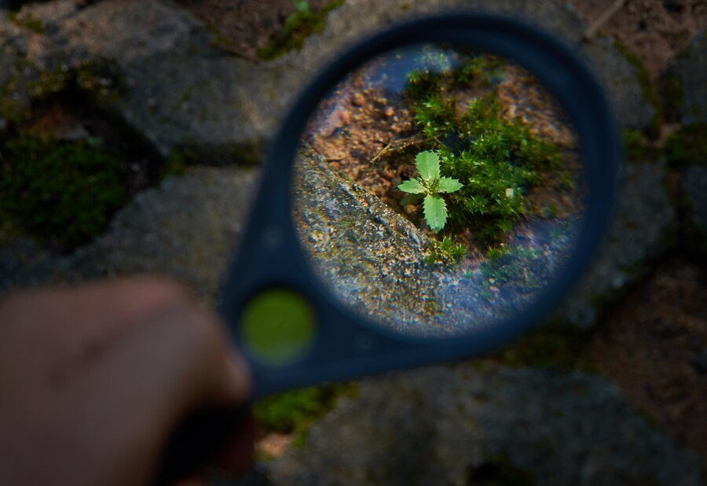
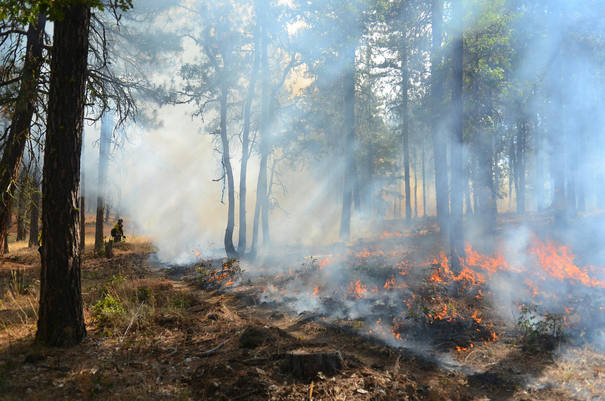
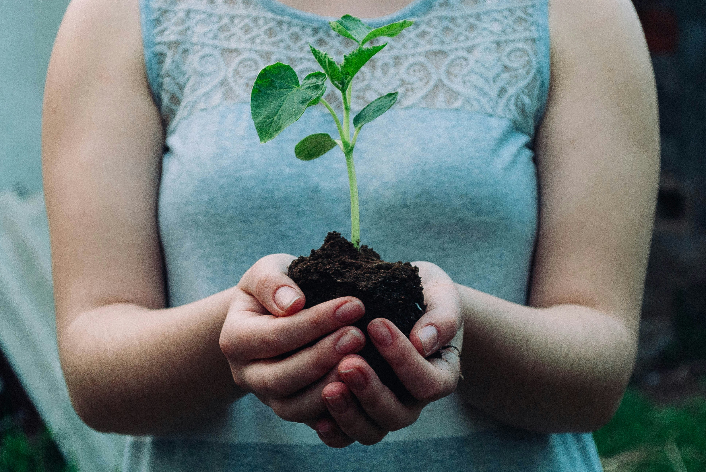

On our planet, there's an incredible variety of life found on land.Think of all the different types of places you've seen: forests, grasslands, deserts, and more. Each of these places is home to a whole bunch of different living things. It's like a giant patchwork quilt of life!
Let's take a closer look at what makes land so special when it comes to life.
1. Discovering Land Habitats Around the World

Imagine walking through a forest. It's not just a bunch of trees; it's a whole ecosystem. There are tall trees reaching up to the sky, bushes and shrubs covering the ground, and all sorts of creatures living in between, from tiny insects to big bears. Forests are just one type of habitat on land. There are also grasslands, which are vast areas covered in grass, and deserts, which are dry places with special plants and animals adapted to survive with very little water. And let's not forget about the frozen tundra, where the ground stays frozen most of the year. Each of these habitats has its own unique plants and animals.
2. Who Lives on Land?

When we talk about the living things on land, we're talking about a whole bunch of different stuff. There are the obvious ones like animals and plants, but there's also fungi (like mushrooms), tiny creatures called microorganisms that you can't see without a microscope, and even bacteria. It's like a big family tree, with each group branching out into smaller groups. And within each of those groups, there are even more kinds of plants and animals. For example, there are thousands of different types of flowers, and each one is a little different from the others.
3. Where Life Thrives: Biodiversity Hotspots

Some places on Earth are like treasure troves of life. They're called biodiversity hotspots. These are areas where there's an extra-special concentration of different plants and animals. Think of places like the Amazon rainforest in South America, where you can find all sorts of creatures like monkeys swinging through the trees and colorful birds flitting about. These hotspots are super important for keeping our planet healthy because they're home to so many different species.
4. The Web of Life:

In nature, everything is connected. Animals depend on plants for food, and plants depend on animals for things like pollination (when bees carry pollen from one flower to another). There are also predators and prey, where one animal hunts another for food. And then there are things like bacteria and fungi that break down dead plants and animals, turning them into nutrients that new plants can use to grow. It's like a big puzzle, where every piece fits together to make a complete picture.
5. Threats to Life on Land:

Unfortunately, our activities as humans are putting a lot of pressure on the plants and animals that live on land. When we cut down forests to make room for farms or cities, we're destroying the homes of countless creatures. Pollution from factories and cars can also harm plants and animals. And climate change, which is happening because of the way we use energy, is causing habitats to change faster than plants and animals can adapt. All of these things are putting a lot of stress on land life.
6. Protecting Our Natural Treasures:

But it's not all bad news! There are people all around the world working hard to protect the plants and animals that live on land. They're creating protected areas where plants and animals can live without being disturbed. They're also working to reduce pollution and combat climate change so that habitats stay healthy. And some communities are even using traditional knowledge passed down through generations to help take care of the land. By working together, we can make sure that the rich tapestry of life on land continues to thrive for generations to come.